Sid Meier's Civilization VI（civ6）をご存じでしょうか？この記事はciv6について適当なことを書いた記事となります。
civ6って何？
civ6は文明を育てるゲームです。よく勘違いしている人がいますが、戦争をすることがメインのゲームではありません。このゲームの目的は全世界の文明の頂点に立つことであり、それには6つの方法があります。
文明を発展させるゲームなのでゲーム内容は多く、技術の研究、社会制度の研究、国土の整備、開拓、外交、食糧確保、反乱の防止など多岐にわたります。制覇勝利を目指して軍事だけに特化していると内政がおろそかになって技術で劣って滅ぼされるなんてこともあるのでバランスが重要になります。
技術や社会制度はツリーで進めていきます。つまり研究したい技術や社会制度から研究していくことになるので、目指す勝利に合わせてツリーを進めていくことになります。
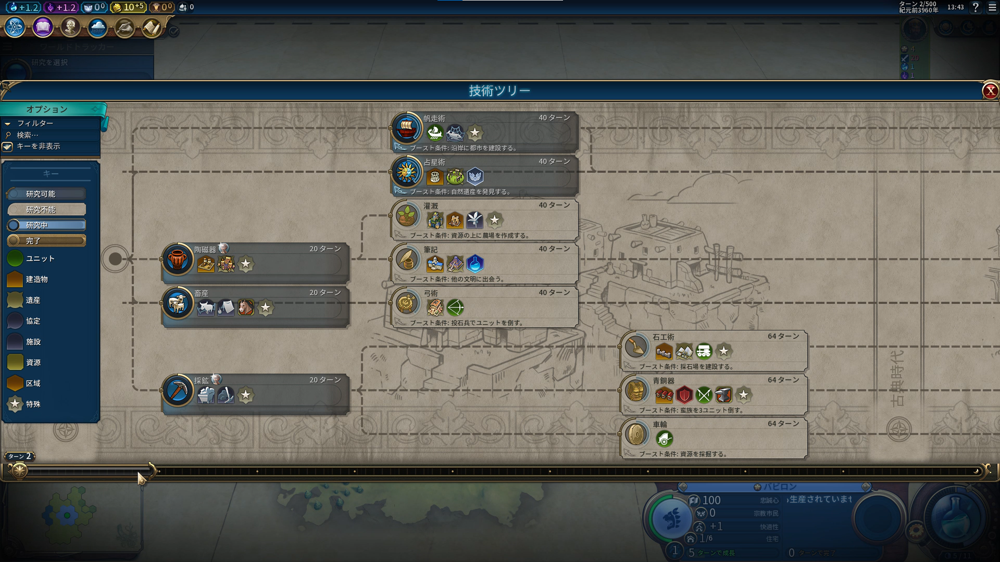↑科学技術ツリー
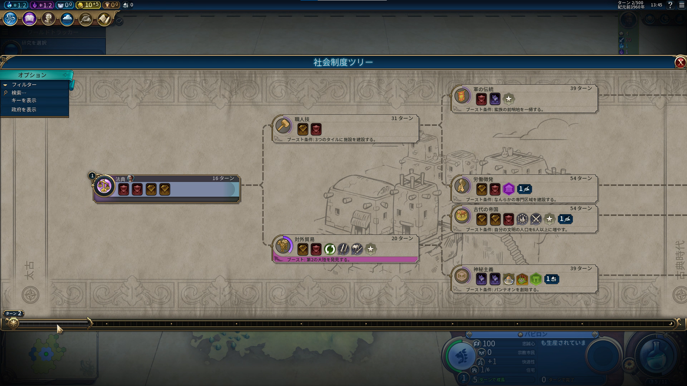↑社会制度ツリー
文明にはそれぞれ指導者がおり、文明と指導者ごとに特殊能力、固有ユニット、インフラなどがあります。なので文明と指導者によって得意な勝利やプレイスタイルが異なります。例えば日本を見てみましょう。
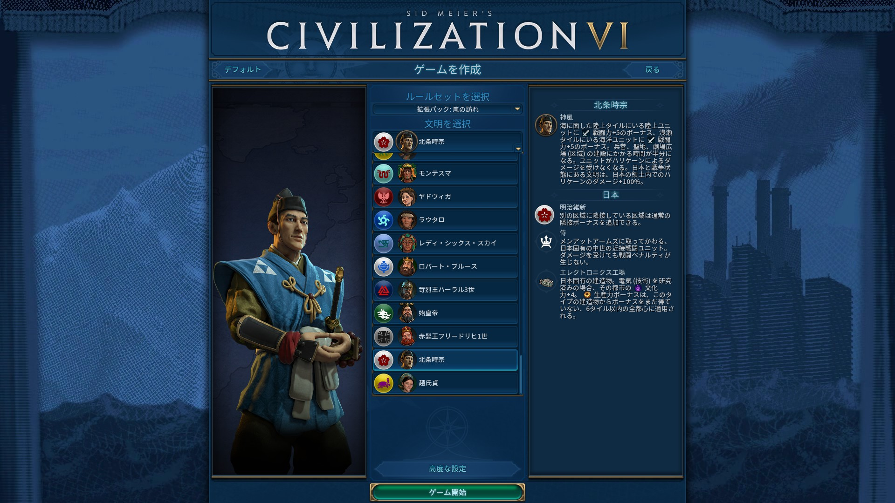海に面した陸上タイルにいる陸上ユニットに戦闘力+5のボーナス、浅瀬タイルにいる海洋ユニットに戦闘力+5のボーナス。兵営、聖地、劇場広場 (区域) の建設にかかる時間が半分になる。ユニットがハリケーンによるダメージを受けなくなる。日本と戦争状態にある文明は、日本の領土内でのハリケーンのダメージ+100%。
別の区域に隣接している区域は通常の隣接ボーナスを追加できる。
日本固有の中世の近接戦闘ユニット。ダメージを受けても戦闘ペナルティが生じない。
日本固有の建造物。電気 (技術) を研究済みの場合、その都市の文化力+4。生産力ボーナスは、このタイプの建造物からボーナスをまだ得ていない、6タイル以内の全都心に適用される。
日本は内政が強く、どの勝利も目指すことができます。
あとメインテーマがすごくかっこいい。みんなも実際に聴いて文明を感じてみよう！
https://youtu.be/WQYN2P3E06sそれでは実際にやってみましょう。
紀元前に産業革命を起こして石炭火力発電所を建設して原子力時代に突入しよう！
このゲームでは頑張れば紀元前に産業革命を起こすことができます。ここではそれが得意な文明と指導者でやってみます。
その前に時代について簡単に説明しましょう。
civ6では文明の発展度合いによって世界と文明それぞれに時代（古い順に太古、古典時代、中世、ルネサンス時代、産業時代、近代、原子力時代、情報時代、未来時代）が設定されます。それぞれの時代に属する科学技術を獲得すると、文明はその時代に突入したとみなされます。例えば「軍事学」を獲得したら産業時代に突入する、といった感じです。
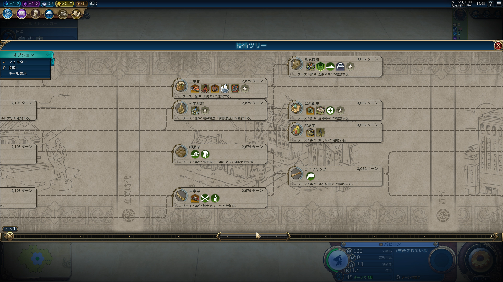↑軍事学は産業時代の技術
文明とは別に世界にも時代が設定されています。これは各文明がどの時代であろうが関係なく一定ターンが経過すると時代が進行します。原子力時代は現実世界でいえば第二次世界大戦からソ連崩壊の期間に当たるんでしょうか。
前置きはここまでにして早速やっていきましょう。今回使うのはこちら！
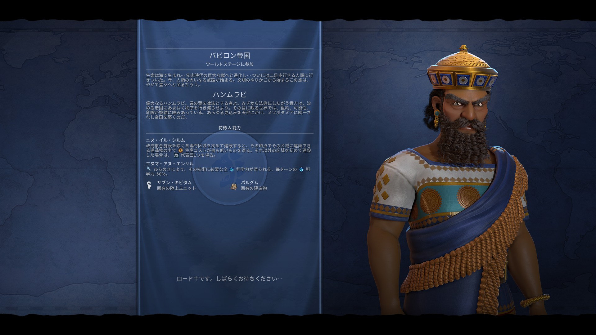ハンムラビ率いるバビロン帝国です。それでは能力の方を見ていきましょう。
各専門区域を初めて建設すると、その時点でその区域に建設できる建造物の中で生産コストが最も低いものを得る。それ以外の区域を初めて建設した場合は、代表団1つを得る。
ひらめきにより、その技術に必要な全科学力が得られる。毎ターンの科学力-50%。
バビロン固有の太古の近接戦闘ユニット。重騎兵と軽騎兵のレベルアップ・クラスを持つユニットに対して戦闘力+17。移動力3、視界3。
バビロン固有の建造物。住宅+1、生産力+2。真水タイルの食料+1。都市が川に隣接している必要がある。
なんかいろいろ書かれてますが、ここで重要なのは文明の能力のほうです。要は、普通に科学技術を研究する場合は2倍の時間がかかるけど、特定の条件を満たせば一瞬で研究が完了するということです。ここでの特定の条件とは、それぞれの科学技術に設定されたブースト条件のことです。普通の文明ではブースト条件を満たすことで研究にかかる時間が半分（中国なら5分の2）になるけど、バビロンでは一瞬で完了します。例えば先に例に挙げた「軍事学」の場合、「騎士でユニットを倒す」ことが条件となります。
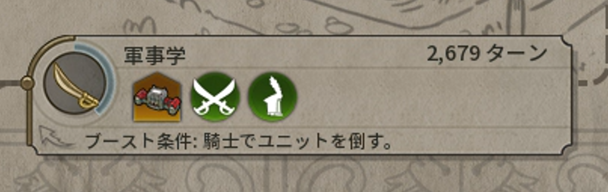したがって、最速で原子力時代に突入するには次の手順を踏みます。
お待たせしました。プレイを開始します。スクリーンショットを掲載しつつ、時系列で出来事を掲載していきます。
首都「バビロン」建設
エチオピア帝国のメネリク2世と遭遇
「採鉱」研究完了
ノルウェー帝国の苛烈王ハーラル3世と遭遇
都市「マルギウム」建設
3つめの鉱山完成、「徒弟制度」獲得、中世突入
バビロンで工業地帯完成（指導者の能力により同時に工房も建設完了）
世界が古典時代に突入
都市「ラピクム」建設
マルギウムで工業地帯完成
マリ帝国のマンサ・ムーサと遭遇
都市「カール・シャマシュ」建設
マルギウムで工房完成、「工業化」獲得、産業時代突入
バビロンで工場完成
バビロンで石炭火力発電所完成、「精製技術」獲得、近代突入
都市「ボルシッパ」建設
油井完成、「プラスチック」獲得、原子力時代突入
紀元前125年、現実世界では漢王朝や共和制ローマの時代にバビロンはプラスチックを完成させて原子力時代に突入しました。ちなみに世界はまだ古典時代で、ノルウェーに至っては未だに太古が終わっていません。エチオピアは古典時代、マリは中世に突入していましたが、原子力時代から見たらどれも大昔です。
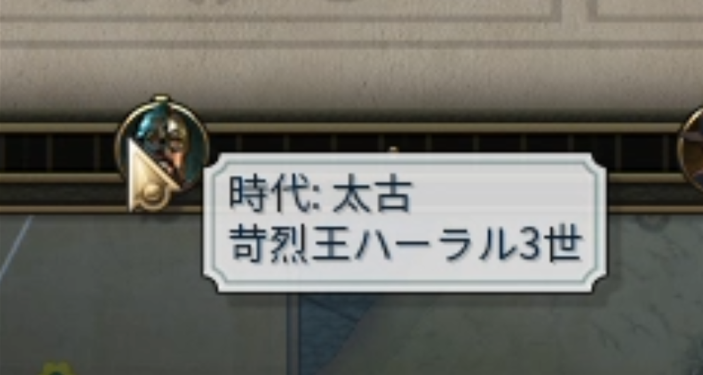↑バビロンがプラスチックを作り石油を掘って電気による生活を満喫している中、こん棒を振り回してやっとのことで青銅器を作り始めたノルウェー
せっかくなのでもうちょい続けて石炭で動く戦艦を作るところまで行きましょう。戦艦は精製技術を獲得した時点で作れるようになっているので、あとは作るだけです。ちなみにプラスチックを獲得したので、パラシュートで降下する特殊部隊も訓練できるようになっています。一方ノルウェーは
カール・シャマシュは海沿いに建設したので、ここで戦艦を作ります。
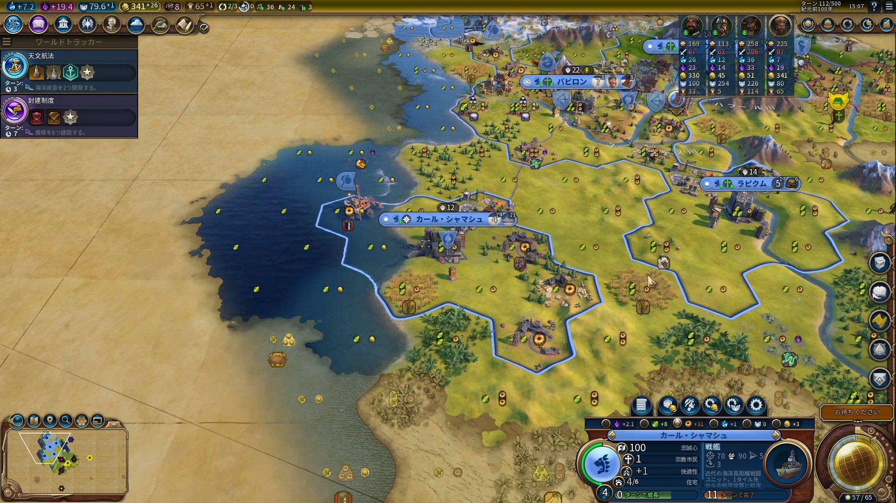世界が中世に突入
戦艦完成
よっしゃーこれで時代遅れの世界に戦争を仕掛けるぞー
civ6検定
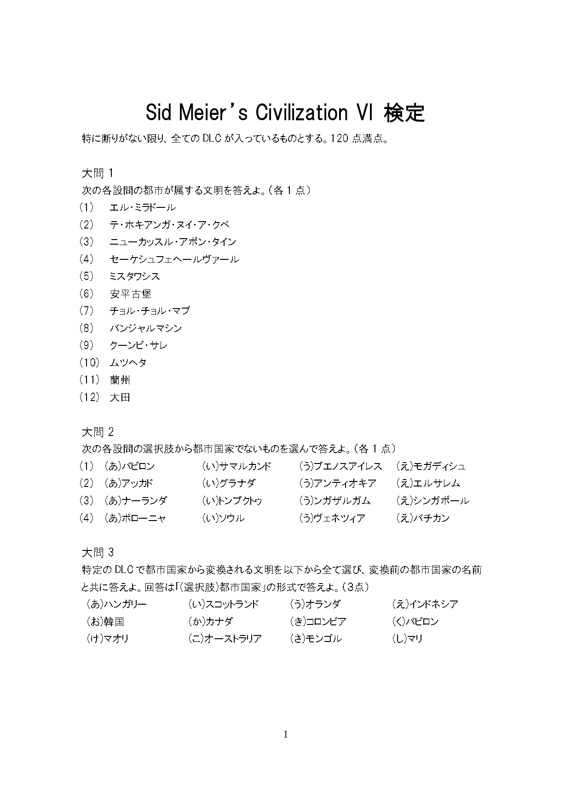 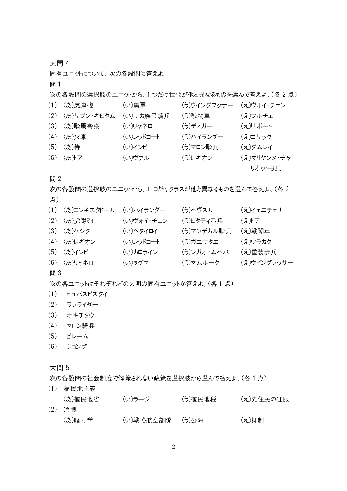 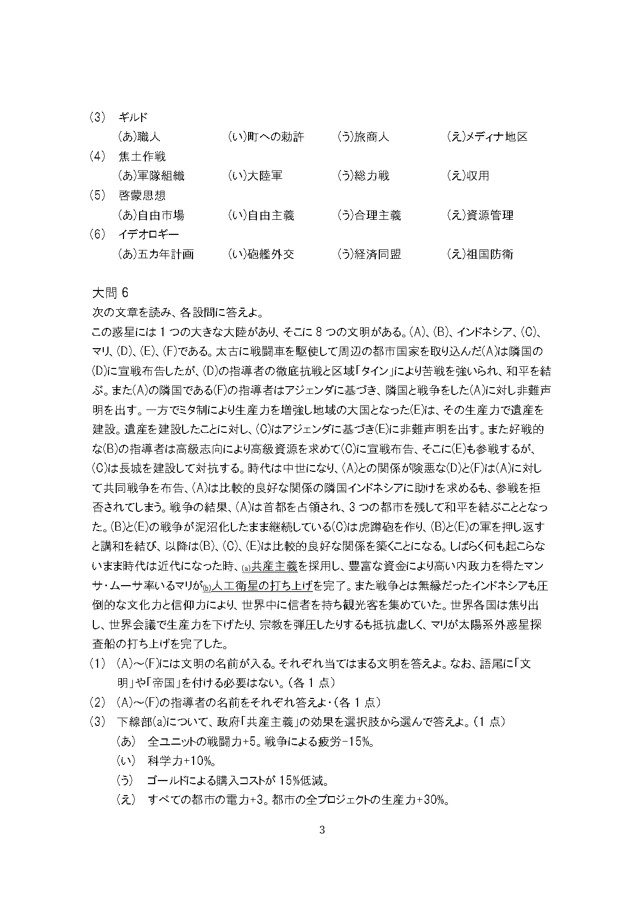 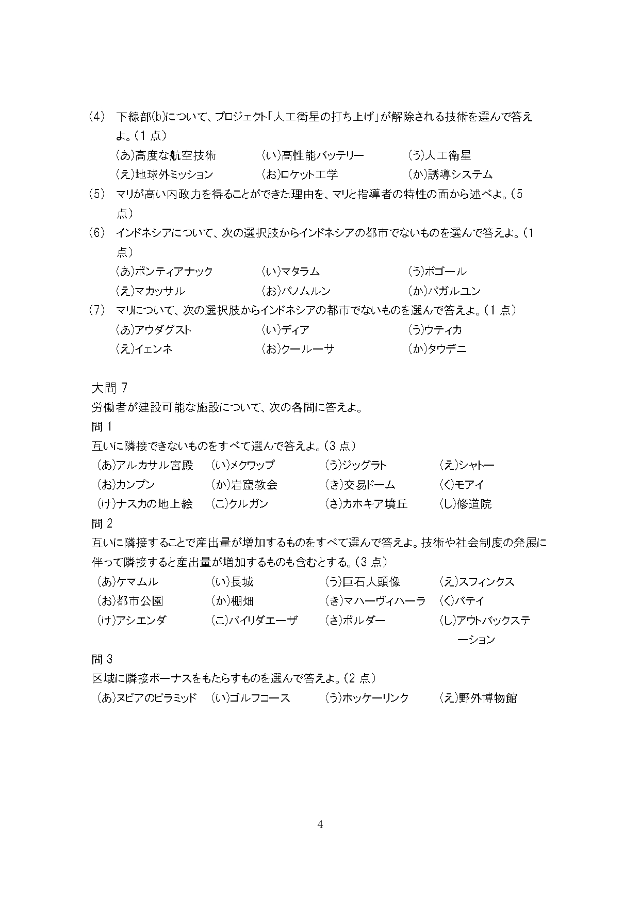 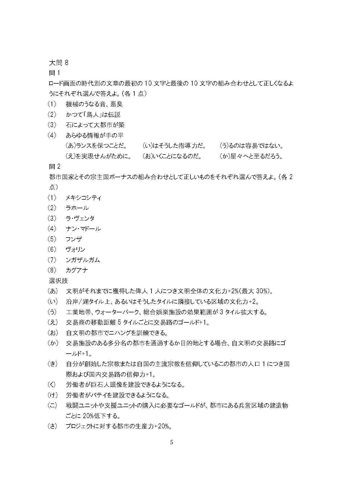 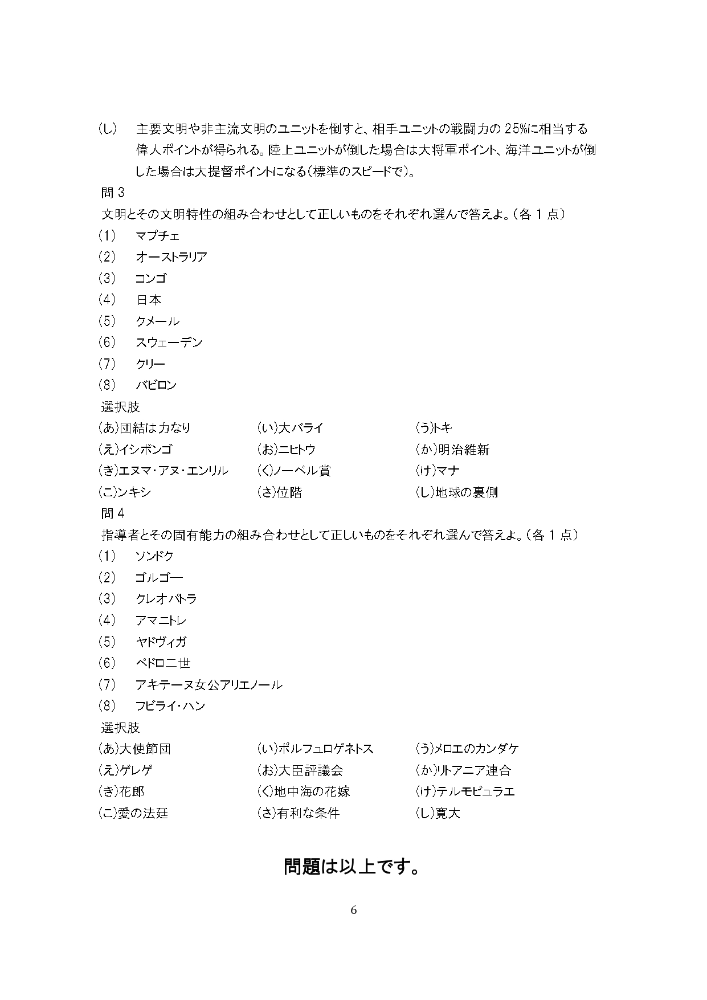 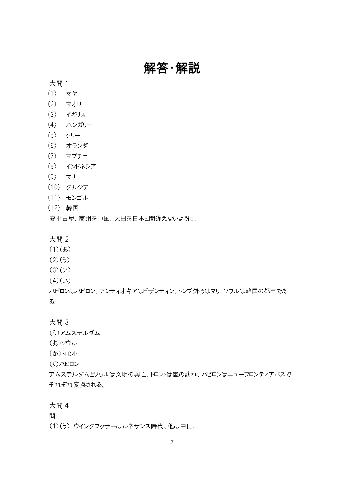 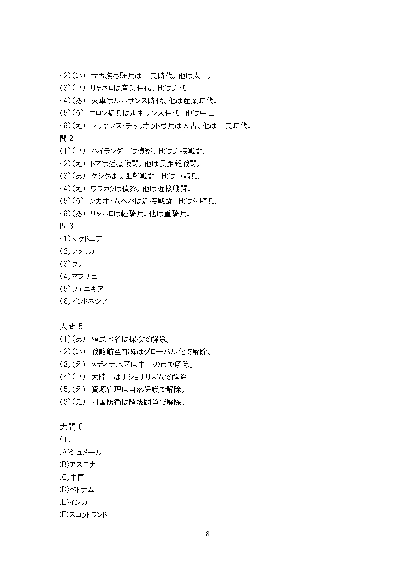 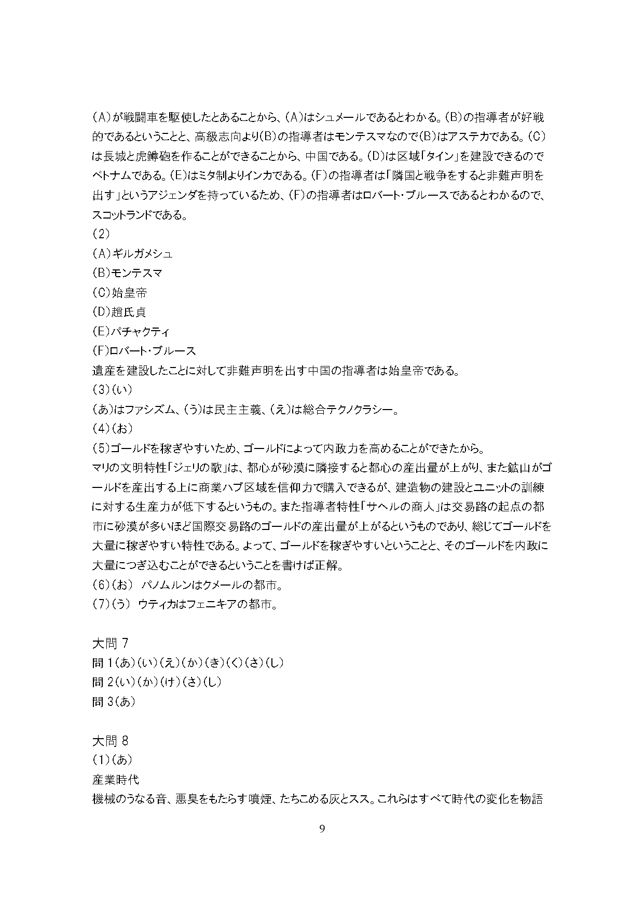 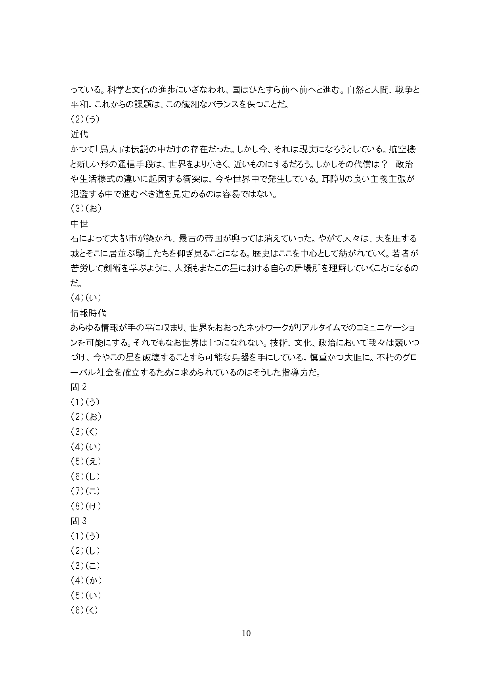 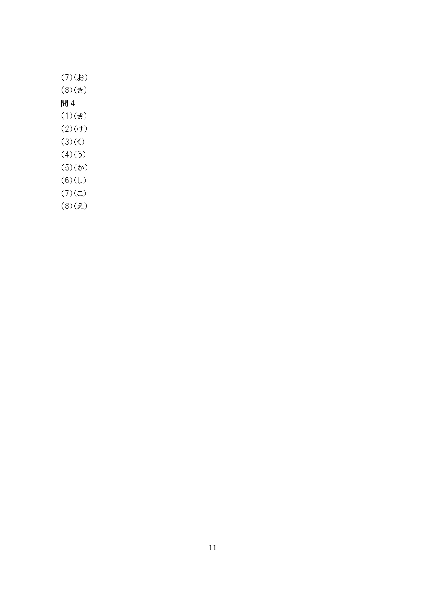答案用紙を作る余力はありませんでした。
参考文献
- シヴィロペディア, 2021/11/29
更新履歴
- 2021/12/3
- 誤字修正
- 2021/12/1
- 一部修正
- 2021/11/30
- 記事作成